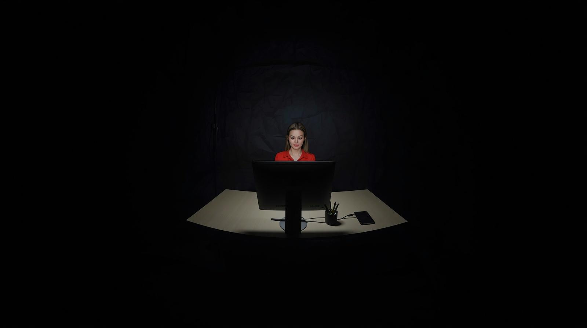
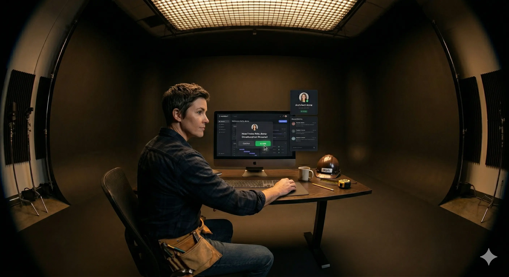
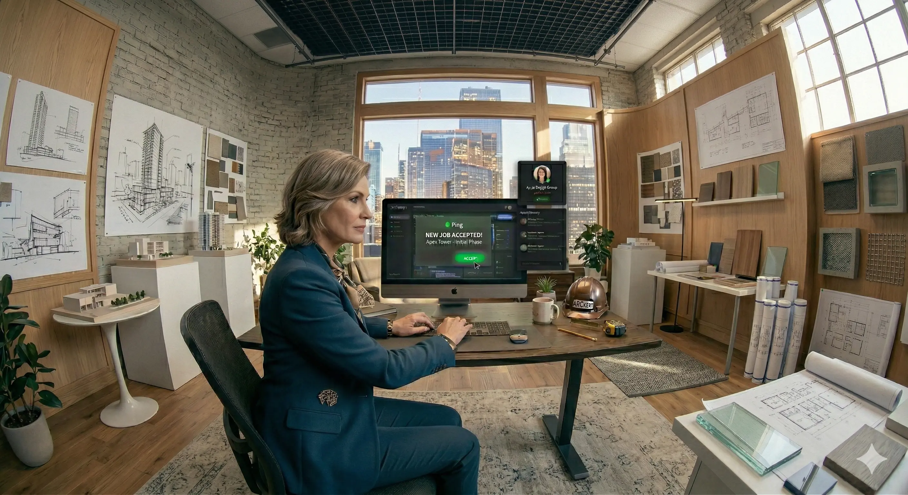
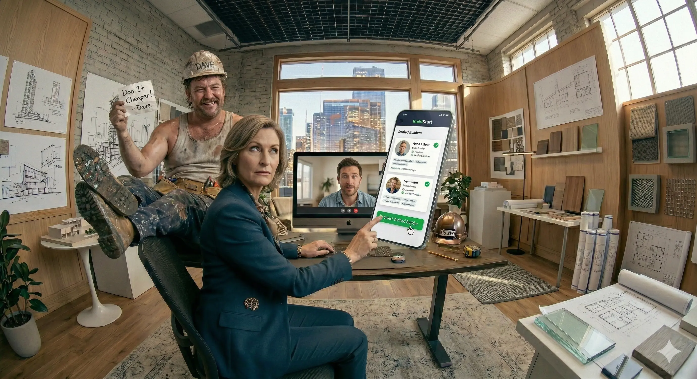
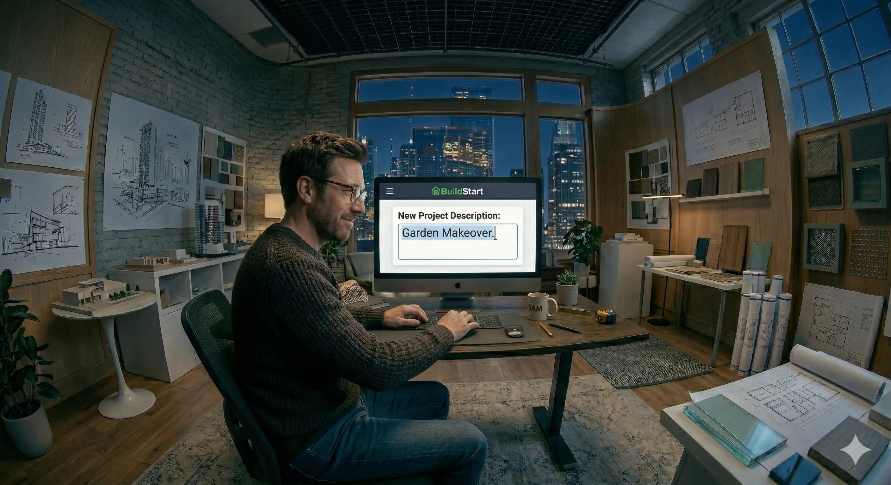
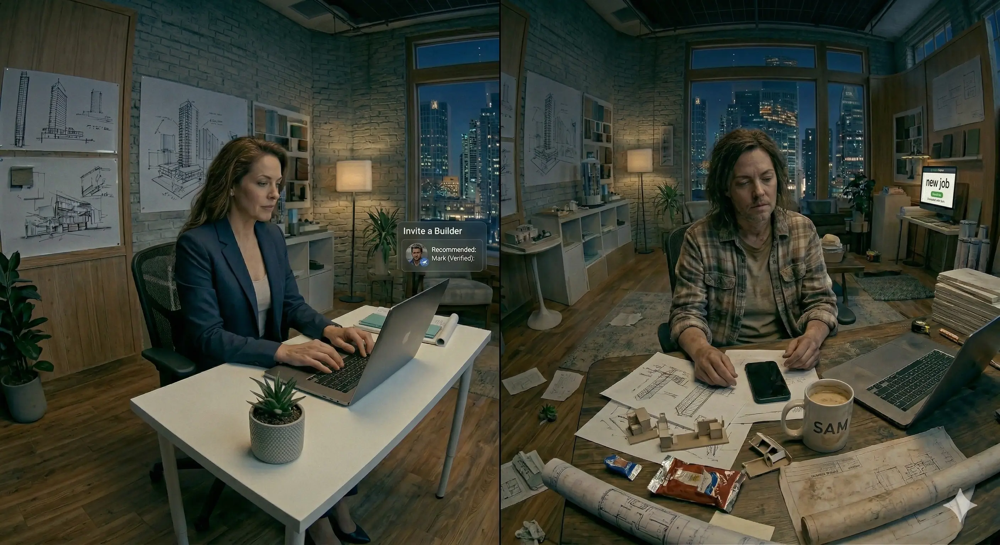
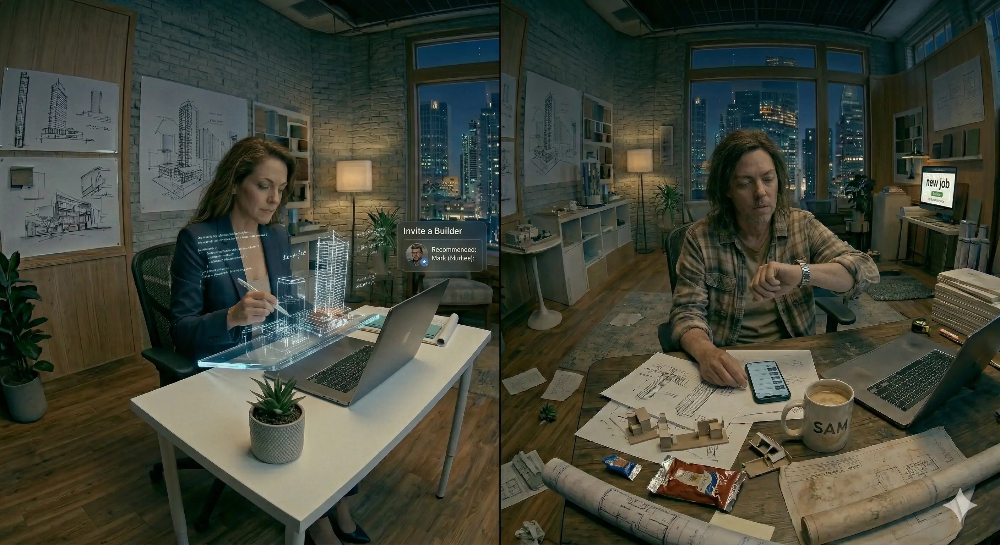

Three ways to tell the story
Each concept is rooted in the same strategy — brought to life through a distinct visual language. We recommend Concept 1.
Concept 1 — The Orbit
A single glowing screen floats in darkness — the camera orbits it cinematically, revealing a new professional each time it passes behind the monitor, making BuildStart the gravitational centre of the entire industry.
Premium 360° orbit camera technique in a dark cyclorama — one platform, multiple lives revolving around it. Cinematic, filmic, high-contrast.

The orbit camera makes BuildStart feel like the gravitational centre connecting all professionals — everyone revolves around the same platform.
The dark-vs-light contrast positions BuildStart as premium and cutting-edge, not a job board.
Wide shot of a dark cyclorama room. A single lit desk and computer glow in the centre. Camera slowly zooms into the BuildStart dashboard showing Architect Anna's profile.

Digital FX: 'New Project Request – Sam (Homeowner).' Profile: 'Anna – Architect Verified Pro.' Notification pings. Logo glows.
This screen changes everything for building professionals.
360° anticlockwise camera orbit begins from the back of the screen, revealing Anna sitting in front of it. Camera completes arc back to the screen's rear → transitions to next person.

BuildStart interface animates: 'Accept Job' → 'Connected with Sam.' Side panel: 'Invite a Builder – Recommended: Mark (Verified).'
This is Anna, a vetted Architect. Today, she's just been booked by Sam — a homeowner who found her on BuildStart, Australia's professional network for building pros like you.
Circular motion — Mark (builder, work shirt) is now at the desk, checking a new notification from Anna. He accepts her collaboration invite.

Mark opens BuildStart app on mobile: 'Anna invited you to collaborate.' He taps Accept. 'Project Kitchen Renovation – Added to Dashboard.'
Anna connects with Mark — a builder whose profile and past work speak for themselves. BuildStart vets every pro — connecting you to projects from clients and other professionals.
Circular motion — Sam (homeowner, casual) smiles at the screen looking at his team. Updates come in on his phone.
Dashboard cards slide in: 'Milestone 2 Complete.' AI Assistant popup: 'All tasks on track.'
The team's on-site — plans in hand, vision coming to life. What began with one connection is now a full collaboration through BuildStart.
Wide shot pushes into a match cut of different building professionals — plumber, carpenter, gardener — same actor, different uniforms.
Floating profile photos with glowing Verified badges interlink. BuildStart logo forms centre-screen.
BuildStart — it's YOUR network. Every pro vetted. Every project worth your time.
Sam sits at night at his desk and opens BuildStart's AI Project Assistant. Types 'Garden Makeover.'
AI chat responds instantly: 'Project created → Suggested Tasks → 3 Vetted Pros Matched.' Progress bar fills; timeline and budget auto-populate.
That night, Sam's already thinking ahead. Because once you build trust, you build momentum. BuildStart — Vetted Network | Quality Clients | Start Today.
Concept 2 — Transitions
One versatile actor plays every role — quick-cut costume transitions in a bright studio — humour and recognition over cinematic production.
Fast-cut character transitions in a bright studio — the same actor in all roles creates instant humour and reinforces that BuildStart connects every stakeholder in one trusted network.
The same actor playing all characters — including the dodgy builder — creates comedy while landing a serious point: BuildStart vets who gets in. The comedic cut is the standout differentiator.
Architect Anna sits in her bright studio office. A ping arrives on her screen. She accepts the job — the scene spirals backwards.

BuildStart dashboard loads. Anna's 'Verified Pro' badge and review stars animate. Notification: 'New Project – Sam (Homeowner). Accept / Decline.' Anna clicks Accept.
Anna is an architect who believes good design starts with the right connections. Today, she's just been booked by Sam — a homeowner who found her on BuildStart.
Anna is on a video call with Sam reviewing a kitchen plan. She opens BuildStart mobile to find a builder. Comedic cut: a bogan tradie pops up behind her — legs up, claiming he'd do it cheaper. Anna rolls her eyes.

Anna filters BuildStart: 'Builders – Verified Only.' Scrolls green-badge profiles. Taps 'Mark – Licensed Builder (5★)' → 'Send Invite.' Connection request sent.
They're designing his dream kitchen. (Comedic intercut) 'I could do it cheaper.' But unlike tradie apps, BuildStart vets every pro. So Anna connects with Mark — a builder whose past work speaks for itself.
All three characters — Anna, Mark, Sam (same actor, different costumes) — stand together holding blueprints in the studio.
BuildStart project dashboard overlay: 'Kitchen Renovation – Milestone 2 Complete.' 'Chat – Files Uploaded ✓'
The team's on-site — plans in hand, vision coming to life. What began with one connection is now a full collaboration through BuildStart.
Sam sits at his desk at night and opens BuildStart. He types 'Garden Makeover.'

AI chat responds instantly: 'Project created → Suggested Tasks → 3 Vetted Pros Matched.' Progress bar fills; budget auto-populates.
That night, Sam's already thinking ahead. Because once you build trust, you build momentum. Vetted Network | Quality Clients | Start Today.
Concept 3 — Split Screen
Two architects, two mindsets — Anna thrives on BuildStart while Ben watches his phone stay silent, until he finally joins.
Split-screen contrast — Anna vs Ben, BuildStart vs doing nothing — viewers instantly see themselves in either character and feel the cost of not being on the platform.
The format creates aspiration (be Anna) and FOMO (don't be Ben) simultaneously. Ben's punchline "Should've BuildStarted sooner" is a rare self-aware brand moment that lands as humour while sealing the value proposition.
Side-by-side studio. Left: Anna, bright and organised, laptop open with BuildStart. Right: Ben, cluttered desk, phone face-down beside cold coffee.

Anna's laptop: BuildStart dashboard open, notification ping: 'New Project Request – Sam.' Ben glances at his quiet phone — no notifications.
Hey there — we're BuildStart. Australia's network for architects, builders, and designers. Some say 'yeah right, let's give it a go.' Others... still waiting for the phone to ring.
Anna joins Sam on a video call to discuss the project. Ben scrolls stale emails on his desktop monitor.

Anna's laptop: BuildStart overlay 'Project Booked – Sam (Homeowner).' Verified Pro badge pulses. Ben's inbox is empty — he refreshes, nothing.
Architects on BuildStart get found by real clients — not tyre-kickers. When your work's verified, the right projects come to you.
Anna uses BuildStart to invite builder Mark while sketching 3D visuals on her tablet. Ben scrolls meaningless listings, checking his watch.
BuildStart chat: 'Invite sent → Invite accepted ✓.' Sidebar: 'Project Status: Active.' Anna's monitor shows milestones updating automatically.
Because BuildStart doesn't just hand out leads — it connects credible professionals who care about quality.
Late night. Ben, frustrated, picks up his phone for the first time. Opens BuildStart app, scrolls featured projects.
BuildStart homepage on Ben's phone: 'Featured Project: Anna – Kitchen Renovation (5★ Verified Pro).' He taps 'Join Now.'
Sooner or later, every architect realises — the best leads don't just happen. They happen on BuildStart.
Sunlight fills both sides. Anna reviews new briefs. Ben sees his first lead arrive. Optional banter: Ben: "Should've BuildStarted sooner."

Split-screen: Left — Anna, AI Project Assistant, '3 Vetted Pros Matched.' Right — Ben smiling at his first lead notification on phone.
Quality Clients. | Ben: "Should've BuildStarted sooner." VO: "Yeah, right you should've."